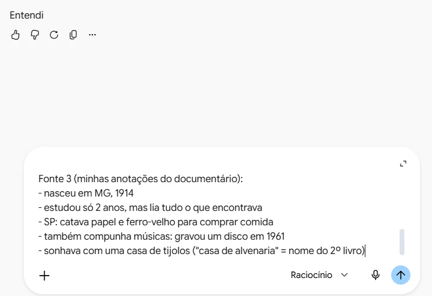
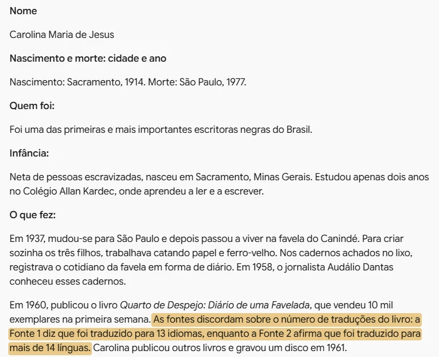
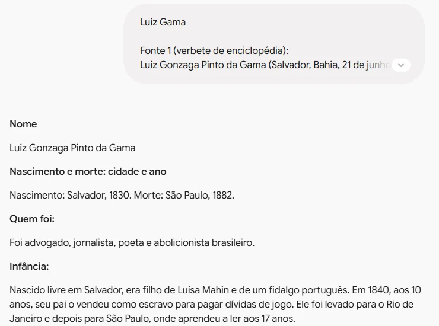
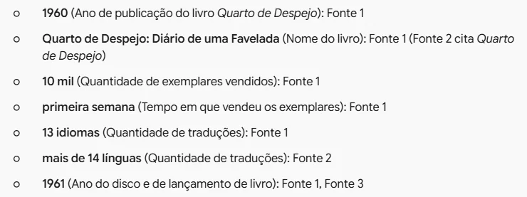
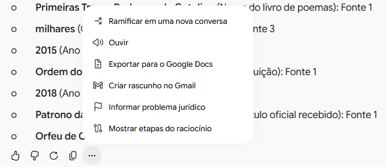

Padronizar biografias
Crie um molde de uma página e deixe o Gemini encaixar nele o que você pesquisou sobre cada personalidade
Carolina Maria de Jesus (Sacramento, Minas Gerais, 14 de março de 1914 – São Paulo…
Ela escrevia em cadernos achados no lixo.
nasceu em MG, 1914
Carolina Maria de JesusSacramento, 1914 – São Paulo, 1977
Foto- Quem foi
- Foi uma das primeiras e mais importantes escritoras negras do Brasil.
- Você sabia?
- O nome do seu segundo livro, Casa de Alvenaria, vem do sonho que ela tinha de ter uma casa de tijolos.
Reúna as fontes
- No exemplo, são dez personalidades negras, cinco mulheres e cinco homens, para um caderno de biografias da turma.
- Cada uma foi pesquisada em lugares diferentes: verbete, reportagem, anotações de um documentário. Tamanhos e tons diferentes.
- Copie os trechos que você leu e anote de onde veio cada um. Você vai precisar disso para conferir no final.
NomeNascimento e morte: cidade e ano
Desenhe o molde
- Antes de abrir a IA, decida o que toda biografia vai ter, e em que ordem.
- Mesma ordem em todas as folhas: a criança sabe onde procurar e consegue comparar uma vida com outra.
- Inclua o que serve à sua aula. "Palavras novas", por exemplo, não está em fonte nenhuma: é um pedido seu, para ajudar na leitura.
- Você concebe, a IA executa.

Abra o Gemini
- No computador ou Chromebook, com a conta @educa (institucional).
- Comece uma conversa nova: o molde vale para tudo o que vier depois dele, na mesma conversa.
Estou preparando um caderno de biografias de personalidades negras importantes da história, para alunos do 4º ano (9 anos). Para cada personalidade, vou colar textos de fontes diferentes que consultei. Com eles, escreva uma biografia de uma página, sempre neste molde: Nome Nascimento e morte: cidade e ano Quem foi: uma frase que apresenta a pessoa Infância: de onde veio e como começou a vida O que fez: as principais realizações, em até dois parágrafos curtos Por que é importante até hoje Frase: uma frase dita ou escrita pela pessoa, entre aspas (só se aparecer nas fontes) Você sabia?: uma curiosidade Palavras novas: até três palavras difíceis do texto, explicadas Regras: no máximo 300 palavras; frases curtas e vocabulário para 9 anos; use somente as informações das fontes, sem acrescentar nada; se uma parte do molde não estiver nas fontes, escreva [não encontrado nas fontes]; se as fontes discordarem, não escolha: avise. Depois da biografia, separado por uma linha, faça uma lista para eu conferir: cada data, número e nome que você usou, e de qual fonte veio. Se entendeu, responda apenas "Entendi" e espere as fontes da primeira personalidade.
Envie o molde
- A primeira mensagem leva só o molde, sem fonte nenhuma. O Gemini responde "Entendi" e espera.
- "Use somente as fontes": sem essa regra, a IA completa as lacunas com o que acha que sabe, e pode inventar.
- A lista para conferir já prepara a verificação do final.
- Troque o ano e a idade pelos da sua turma. Para pular linha sem enviar: Shift + Enter.

Cole as fontes
- Comece pelo nome da personalidade e cole as fontes logo abaixo.
- Dê um nome a cada uma: Fonte 1, Fonte 2, Fonte 3. É assim que o Gemini vai dizer de onde tirou cada informação.
- Pode colar do jeito que estiver, até anotação em tópicos. Clique na seta para enviar.

Leia a biografia
- Três textos desencontrados viraram uma biografia no molde, com 271 palavras e frases para 9 anos.
- Repare no fim de "O que fez": as fontes discordam sobre as traduções do livro, e o Gemini avisou em vez de escolher. Foi isso que pedimos.

Mande só as fontes da próxima
- Na mesma conversa, cole o nome e as fontes da próxima personalidade. Nada de instrução.
- O Gemini lembra do molde e devolve a biografia no mesmo padrão.
- Repita até completar as dez.
Se a conversa ficar longa e o Gemini começar a fugir do molde, abra uma conversa nova e envie o molde de novo. Guarde o molde num documento para ter sempre à mão.

Confira cada informação
- A lista no fim da resposta diz de qual fonte veio cada data, nome e número. Abra a fonte e confira.
- Onde as fontes discordam, a decisão é sua: procure uma terceira fonte confiável.
- Atenção ao erro sutil. Na biografia de Luiz Gama, a fonte dizia pai "de origem portuguesa" e a IA escreveu "fidalgo português". Parece igual, mas não é.
A IA ajuda a organizar, mas não garante que a fonte esteja certa nem que ela própria leu tudo direito. Material para criança só vai para a turma depois de conferido.

Monte a folha no Documentos
- Nos três pontinhos abaixo da resposta, escolha Exportar para o Google Docs.
- No documento, apague a lista de conferência: ela é para você, não para a criança.
- Coloque a foto em Inserir → Imagem.
Use uma foto real, de acervo confiável, e escreva o crédito. Não peça para a IA gerar o retrato: ela inventa um rosto que não é o da pessoa.
Veja o padrão
- Interativo: toque em uma parte do molde para ver de onde ela veio.
- Você escreveu o molde uma vez. Daí em diante, cada biografia custou só colar as fontes.
- O tempo que sobrou vai para o que a IA não faz por você: escolher boas fontes e conferir o resultado.